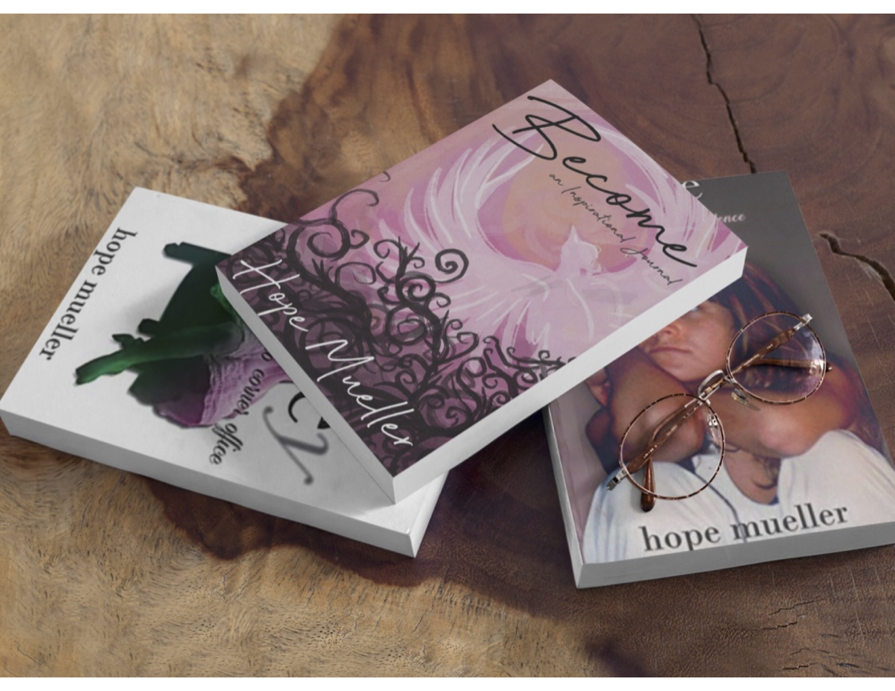
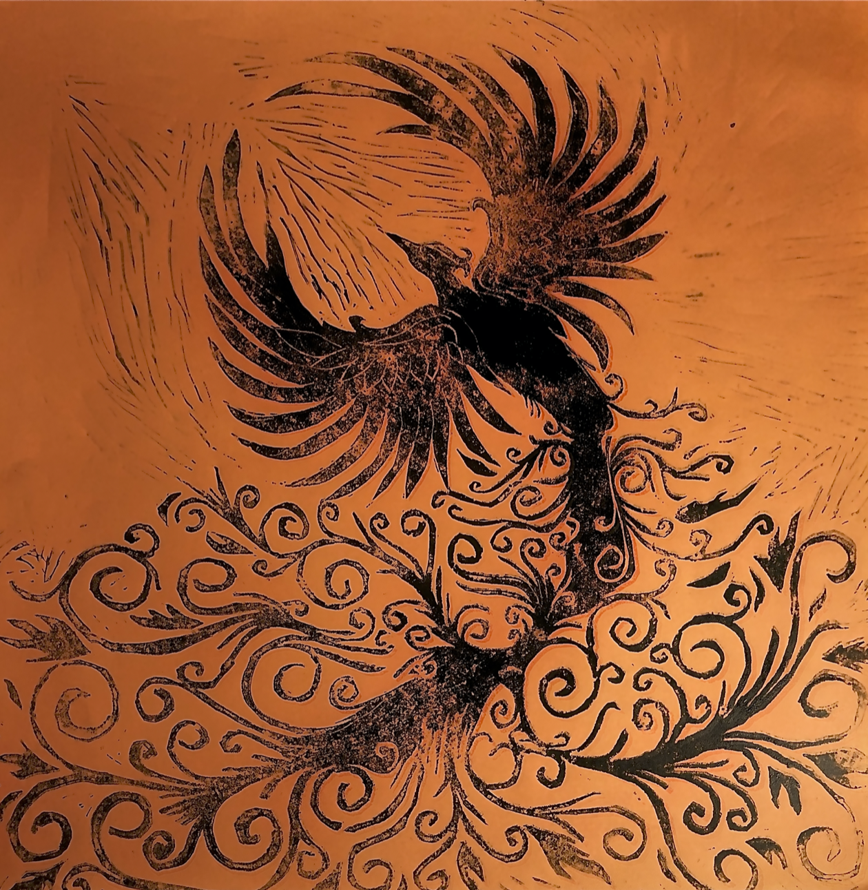

My Graphic Design work is something I take pride in, with my style being somewhat all over the place. Some of my things are very refined, some are a bit more graphically challenging. I have done work for my Mother and my highschool. I did the design work for my Mothers book and journal that she written and published. I did a lot for highschool after I graduated like sign work, decal work, and a bit of apparel. All very graphically inclined, some having a lot more elements than others because I choose and like a rather busy style. I like there being multiple elements to look at and involve all within the same piece. Printing was one of my favorite art classes to ever take. There are so many ways to print one image. Just by changing the type of material you're printing with or changing the type of paper you're printing with, one image can look different in a wide variety of ways. I love the aspect of changing one thing and the whole thing changing in just the smallest of details. I really like the focus and attending to the smallest detail but also love looking back at the whole picture and capturing chaos or disorder. Within every orderly tiny detail of my pieces there is a bigger picture that leads to chaos in some degree.
My Mom has written and published two books; the first book I designed the typography for the cover. The books are about her time growing up in a commune in the 70’s with my grandma. I originally was going to design the whole cover but I got taken away with school work that I was only able to fully design the typography. The title of the book is "Hopey" as in my mom’s name and what the family calls her. The "y" in her name on the cover I dropped shadowed and then got rid of the actual letter. The "y" now looks shadowed and faded as to represent the change from childhood to adulthood which is how her first book is laid out, ends with her going to college. My Mom has also written and published a journal; the cover was designed by me using one of my old artworks. See the artwork below! My mom wanted to write a journal since she personally journals everyday about everything in life. She has one for work in her office and one on her nightstand in her bedroom. She wanted the cover to represent rising from all that you have been through and pushing through everyday to grow and move on. She chose my phoenix print but wanted me to digitize the image and make some of the elements more graphically inclined than what I drew or how the print came out. We had to use pink in some way as that is my Mothers favorite color. I changed around the colors of the phoenix to what would sit best with the light pink she wanted. I think I came out wonderful and it was a lot of fun to work with my mom on something together. I was so happy she liked what I came out with and I couldn't be happier with her using my artwork on the cover.
This Phoenix Print is the one featured above in the journal cover. It is personally one of my favorite prints I have ever done. I wish I had possession of the rest of my prints, unfortunately they were all given away to my teacher at the time. I drew out this phoenix as a tattoo for myself and over the course of the school year ended up using it for a class to make an amazing and dynamic print. I used red-orange colored paper to print on to represent the fire the phoenix rises from. I love the added lines to it from the material I used to print my image. It is such a simple image that symbolizes so much to not only me but my mom. Life happens to all of us and it's hard to keep up from time to time. Rising from that and each and everyday taking it on as a new day.